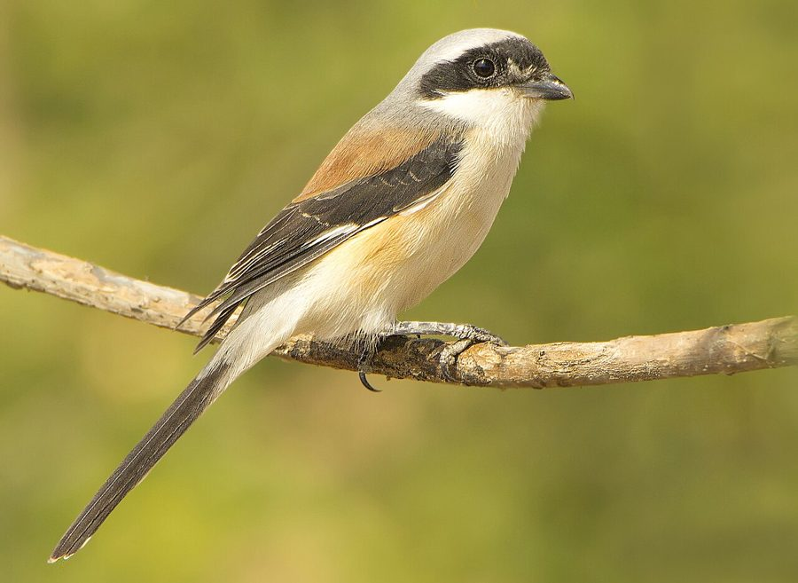

छोटा लटोराBay-backed Shrike
Lanius vittatus · Laniidae · BRD-0217

- Scientific name वैज्ञानिक नाम
- Lanius vittatus Valenciennes, 1826
- Family कुल
- Laniidae
- Hindi हिंदी
- छोटा लटोरा
- Local names स्थानीय नाम
- chhota latora, latora, bay backed shrike, shrike
- Status here यहाँ की स्थिति
- native
- Movement आवागमन
- Resident, here all year
- Known from कहाँ दर्ज
- Others have published records from the Basti–Ayodhya districts बस्ती–अयोध्या के ज़िलों से दूसरों के प्रकाशित अभिलेख
- IUCN IUCN
- LC
- Review समीक्षा
- audited and independently read
When to look कब देखें
Present all year. साल भर मौजूद।
Uses and possibilities उपयोग और संभावनाएँ
Drawn from the documented uses in the profile below, where each is labelled traditional, current or a research lead. All uses →
Tell it apart from इनसे अलग पहचानें
छोटा लटोरा / Bay-backed Shrike
Lanius vittatus Valenciennes, 1826 — Laniidae
छोटा लटोरा — यह छोटा, आक्रामक शिकारी पक्षी पूर्वी उत्तर प्रदेश के खुले मैदानों और बागों में साल भर पाया जाता है। इसकी सबसे बड़ी पहचान इसकी लाल-भूरी पीठ (chestnut or bay back) और काली पूंछ है। यह एक सक्रिय शिकारी है जो पतली टहनियों पर बैठकर छोटी चिड़ियों और बड़े कीड़ों का शिकार करता है।
Quick Identification त्वरित पहचान
| Feature | Description |
|---|---|
| Size | Small shrike; 17–18 cm total length |
| Back | Chestnut-rufous or warm bay colour (diagnostic) |
| Crown | Greyish or slightly darker |
| Face | Black eye-stripe through eye; white lores |
| Tail | Black with white tips; fairly long |
| Breast | White or off-white; often with peachy wash |
| Wings | Dark with white wing patch |
| Behaviour | Perches upright; watches for prey; pounces onto small birds |
Field tip: A small, colourful shrike with a distinctive warm chestnut or bay back and black tail. Perches openly on exposed twigs or telephone wires, looking for small birds and large insects. The white eye-stripe and chestnut back are diagnostic.
हिंदी — कैसे पहचानें:
छोटी शिकारी चिड़िया; लाल-भूरी पीठ।
काली पूंछ; सफ़ेद पेट।
खुली टहनियों पर बैठता है।
बहुत आक्रामक; छोटी चिड़ियों का शिकार करता है।
Morphology आकारिकी
Biometrics:
| Measurement | Range |
|---|---|
| Total length | 170–180 mm |
| Wing (flattened chord) | 80–95 mm |
| Tail | 75–90 mm |
| Bill (culmen) | 14–16 mm |
| Tarsus | 18–20 mm |
| Weight | 27–35 g |
Size: 17–18 cm long; wingspan 24–28 cm. Weight 27–35 g.
Plumage: Crown greyish-brown. Back warm chestnut or bay (diagnostic). Rump and upper tail coverts chestnut. Tail black with white terminal spots. Lores white; distinct black eye-stripe (malar stripe) from lore through eye. Cheeks white. Throat white. Breast whitish with peachy wash. Belly white. Wing coverts darker; primary coverts and primaries dark with a white wing patch.
Bill: Stout, slightly hooked; dark.
Legs and feet: Greyish.
Sexes: Very similar; females slightly duller.
Vocalisations
- Call: Rather harsh and unmusical; churr-churr or chack-chack, often repeated in series.
- Song: Limited; mostly reliant on harsh calls.
- Alarm call: Sharp chattering when mobbed by smaller birds.
हिंदी: कठोर "चर्र-चर्र" आवाज़। गायन कम होता है। छोटी चिड़ियों से घिरने पर ज़ोर से चिल्लाता है।
Behaviour & Ecology व्यवहार और पारिस्थितिकी
Sit-and-wait predator: Spends much of the day perched on open, elevated perches from which it watches for small birds and large insects. Pounces quickly onto prey.
Prey: Primarily small birds (sparrows, munias, warblers); large insects including grasshoppers, beetles and dragonflies. Occasionally lizards.
Hunting technique: Perches on exposed twigs or wires; darts down to catch prey on the wing or on the ground.
Territorial: Resident and territorial; maintains year-round territory.
Social: Solitary or in pairs; not gregarious.
हिंदी: खुली टहनियों पर बैठता है और शिकार की तलाश करता है। छोटी चिड़ियों पर हमला करता है। साल भर यही इलाक़े में रहता है।
Life Cycle / Phenology जीवन चक्र
Resident: Year-round resident; breeds locally (February–May).
Breeding: Nest is a cup of twigs, grass and fibres placed in a shrub or tree fork. Lays 3–5 eggs.
Clutch: 3–5 pale greenish eggs with brownish markings.
Incubation: 14–16 days.
Fledging: Chicks fledge in approximately 16–18 days.
Moult: Complete annual moult.
हिंदी: साल भर यहाँ रहता है। फरवरी से मई तक प्रजनन करता है।
Host Plants or Prey आहार
Primary food items:
- Small birds (sparrows, munias, warblers, sunbirds)
- Large insects (grasshoppers, locusts, beetles, dragonflies)
- Spiders
- Small lizards (occasionally)
Predators / Natural Enemies शत्रु
- Raptors: Small falcons and larger shrikes may predate on bay-backed shrikes
- Corvids: Likely mobbed and harassed but not usually preyed upon
- Parasites: Blood parasites and endoparasites typical of small raptorial birds
Agricultural / Human Relevance कृषि प्रासंगिकता
Pest control: Assists in control of grasshoppers, locusts and crop-damaging insects in agricultural areas.
Bird predation: May impact populations of small songbirds in cultivated areas, though not significant at ecosystem scale.
Legal status: Protected under the Wildlife Protection Act 1972. Populations stable and common throughout most of the range. Hunting is prohibited.
Expected Locally स्थानीय रूप से अपेक्षित
Not a field record. Written from published accounts for eastern Uttar Pradesh. No confirmed local sighting yet — if you have seen it, that is what the atlas needs.
अभी तक स्थानीय पुष्टि नहीं। यह विवरण प्रकाशित स्रोतों से है, किसी अवलोकन से नहीं।
GBIF holds published records from these districts. Expected year-round in open scrub, cultivated areas with scattered trees, and village gardens. Perches openly on exposed twigs and telephone wires, making it relatively conspicuous. Most active during early morning and late afternoon. The first local record would be a photograph showing the distinctive bay or chestnut back and black tail with white tips, with place and date, submitted through the About page.
हिंदी: साल भर खुली जगहों और बागों में देखे जाने की उम्मीद है। खुली टहनियों पर बैठता है, देखना आसान है। पहला रिकॉर्ड फोटोग्राफ के साथ तारीख़ और जगह दिखानी चाहिए।
Distribution वितरण
Global range: Indian subcontinent; resident throughout.
In India: Widespread resident throughout the Indian peninsula; particularly common in open country.
In Uttar Pradesh: Resident throughout the state; expected in open scrub and cultivated areas.
In Basti district / eastern UP: Year-round resident in open scrub, cultivation with scattered trees and village gardens.
Research Questions शोध प्रश्न
- What is the detailed prey composition and hunting efficiency of bay-backed shrikes in different seasons?
- How does the density of bay-backed shrikes correlate with the availability of perching sites (trees, wires)?
- क्या इस शिकारी चिड़िया की संख्या से गौरैया जैसी छोटी चिड़ियों की संख्या प्रभावित होती है?
- What is the role of bay-backed shrikes in grasshopper and locust control during plague years?
- Are individual shrikes faithful to specific hunting territories year after year? (Can be tracked through observation and banding.)
- क्या गाँवों में बिजली की लाइनें इसके शिकार के तरीके को प्रभावित करती हैं?
Similar Species मिलती-जुलती प्रजातियाँ
| Species | Key Difference | Hindi | Field Rule | |
|---|---|---|---|---|
| [[brown_shrike\ | Brown Shrike]] (Lanius cristatus) | Slightly larger; duller brown back; different face pattern; winter visitor | — | Bay-backed shrike is resident, smaller, with warmer chestnut back and clearer white eye-stripe. |
| [[long_tailed_shrike\ | Long-tailed Shrike]] (Lanius schach) | Larger; black back; long tail; different colouration | — | Long-tailed shrike is much larger with a black back. Bay-backed is smaller and chestnut-backed. |
Field rule: Bay-backed shrike is a small shrike with a distinctively warm chestnut or bay back (never black or grey). If the back is black, it is a long-tailed shrike. If the back is duller and the bird is a winter visitor, it may be a brown shrike.
Taxonomy & Classification वर्गीकरण
Original description. Described by Valenciennes in 1826 in Dictionnaire des Sciences Naturelles as Lanius vittatus. Type locality is India.
Subspecies. Monotypic; only subspecies is L. v. vittatus.
Family and order placement. Order Passeriformes; family Laniidae (shrikes). Genus Lanius contains the "true" shrikes.
Phylogenetic notes. Closely related to other Asian shrikes including the brown shrike and long-tailed shrike.
IUCN status rationale. Least Concern. Widespread and common resident throughout the Indian subcontinent. Adaptable to human-modified landscapes.
हिंदी: भारत में सामान्य और निवासी चिड़िया है। कानूनी सुरक्षा में है।
Photo Gallery फोटो गैलरी
No photos yet — add field photos to media/species/bay_backed_shrike/ and run node scripts/sync_photos.js.
Wanted photos:
- Perched on exposed twig showing chestnut back
- Bird hunting or diving for prey
- Close-up of head showing face pattern
- Pair together
References संदर्भ
- Valenciennes, A. (1826). Dictionnaire des Sciences Naturelles, 47: 430.
- Ali, S. & Ripley, S. D. (1987). Handbook of the Birds of India and Pakistan. Vol. 4 (Frogmouths to Flycatchers). Oxford University Press, Delhi. Pp. 373–375.
- Grimmett, R., Inskipp, C. & Inskipp, T. (2011). Birds of the Indian Subcontinent (2nd edn). Oxford University Press, Delhi. Pp. 327.
- Rasmussen, P. C. & Anderton, J. C. (2012). Birds of South Asia: the Ripley Guide (2nd edn). Lynx Edicions, Barcelona. Vol. 2, Pp. 562.
- GBIF Occurrence Data — Lanius vittatus, India.
- IUCN Red List (2023). Lanius vittatus — BirdLife International. IUCN, Cambridge. Status: Least Concern.
Source file: species/fauna/birds/bay_backed_shrike.md